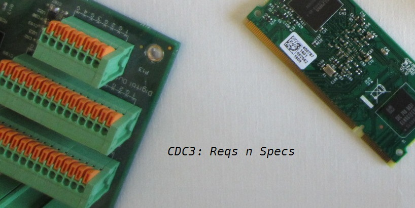
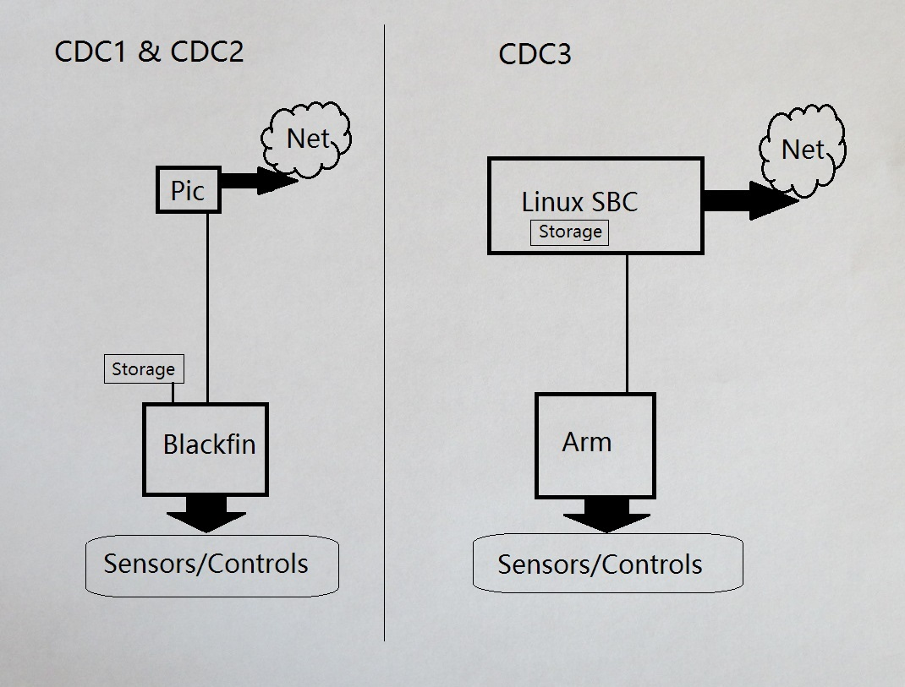
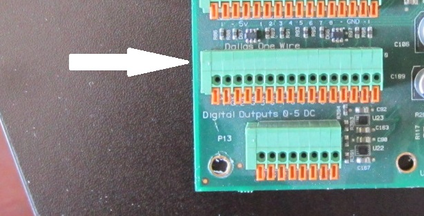
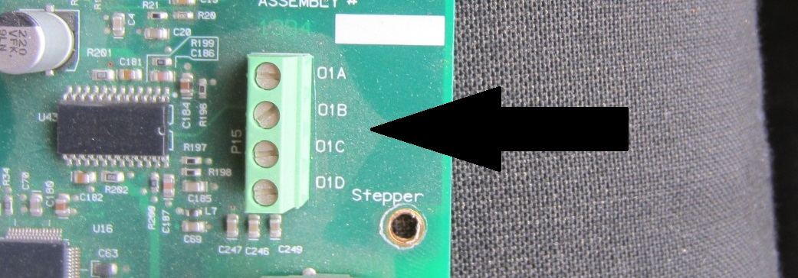

Quick Summary
This document will provide a list of specifications and requirements for the CDC3 controller.
Note on Connectors
For physical connectors on-board, the 2 categories of connector types are:
- screw terminal/push-pin: Wires need stripping
- molex: Wires need stripping and crimping and a connector
The general consensus (Ian/Tom/Joseph) is that for wires that land in the field the connector type should be screw-terminal/push-pin.
For wires that are primarily connected up at the factory, make the connectors molex.
CPU requirements
The picture below shows the existing board architecture on CDC1/CDC2, and it also shows the changes proposed for CDC3.

The architectures are strikingly similar:
- Both have a seperate Network Controller on the Front-End
- Both have a powerful 32-bit CPU on the back-end for handling all the controls and sensors.
A newly updated CDC3:
- Replaces Blackfin CPU with more highly integrated and standard ARM CPU
- Uses highly functional and Extremely Flexible Linux Single Board Computer for the network front-end.
- migrates Data Storage to on-board flash of Linux SBC
CDC Controller CPU
STM32407IG: ARM Cortex-M4 core with DSP and FPU, 1 Mbyte Flash, 168Mhz, ART Accelerator.
192+4 Kbytes SRAM including 64-Kbyte of CCM data RAM
The 407IG is a more highly integrated part than the Blackfin, and there are several chips external to the Blackfin that are no longer needed due to the 407IG having the functionality built-in and on-chip. Chip savings include:
- Real-Time clock
- the i2c DAC chip
- Flash memory
- Ram memory
- the 8MB spi flash chip
CPU Reference Platform

On-Board JTAG debugger
The reference platform from above includes an additional on-board CPU which serves as a dedicated JTAG debugger.
Any of the STM32F103 family of processors will work for this, for example:
- STM32F103C8T6
Linux SBC
Candidates for Linux SBC include:
Any of these will work and some are more integrated than others (including wifi).
I am in favor of the Raspberry Pi Compute Module, mainly due to the Software and Distro support.

Data Storage
With CDC1 and CDC2, data storage was limited to 2MB of flash, plus an extra 8MB of SpiFlash (which as of 2/7/2019 has yet to be implemented). Total of 10MB of data storage.
CDC3 with the Raspberry-Pi Compute Module would have approximately 3GB (Giga!) of storage, and that is WITHOUT an sdcard. The flash part in the compute module is 4GB. Linux OS, and ‘other’ are roughly 1GB. That leaves an easy 3GB for data storage.
On CDC1 and CDC2, data storage was on the control-side of things (Blackfin)
On CDC3, data storage will migrate to the Host (Linux SBC).
Sensors/Controls: 1-Wire Bus
The standard 8 port 1-Wire solution from CDC1 will be used.
Ice-Bears’ currently use up to 5 of the 1-Wire ports:
- I0.OAt, A1.SAt, A1.RAt, A2.SAt, A2.RAt
Only temperature type 1-Wire sensors are being used. There are place-holders in the code to use other type of sensors (humidity for example), but they are not ever used.
1-Wire Connectors
These sensors are frequently installed in the field, so they need to be easy to work with for the technicians.
Keep the connectors same as in CDC1.
This means the techs will not have to crimp wires in the field.

Sensors/Controls: Digital Inputs
There are 2 categories of Digital Inputs:
- need 8: standard 0-5v GPIOs
- need 7: 24V AC/DC (round to 8??)
5v Digital Inputs
The standard header that is used on CDC1 for Digital Inputs can be used. In addition to the actual Pin ports, there are extra ports for 5v and GND. Those can remain, as they have proven valuable.
4 of the Digital Inputs are mapped to Ice-Bear Modes:
- Make Ice
- Melt Ice
- System Off
- System Bypass
The other 4 are used for Bear functionality:
- I0.RPd3 is the refrigerant pump fault
- TargetCompOn2 optional, indicates if Target Compressor #2 is on
- DR1 optional, reflects state of DR #1 device
- DR2 optional, reflects state of DR #2 device
Needs for TargetCompOn2, DR1, DR2 as 5v Digital Inputs would go away when these signals are more properly mapped to 24V AC/DC. Right now the techs have to wire these up with external relays.
New Functionality on Digital Input Pins
The requirement is to handle an incoming PWM Signal, and the idea for this largely comes from Greg Miller.
A PWM Input Signal could be used in conjunction with a solar installation (just one application) to indicate the amount of power that can be delivered to the Bear. A duty cycle of (for example) 60% would mean that the Bear could turn on it’s compressor and start Making Ice.
Any of the Input pins on the Blackfin (CDC1) could be programmed as a
PWM input signal today. There would need to be a very minor setup change
on the pin, and then a more significant change to read the incoming signal
and take some action based on that.
Example PWM signal with 75% duty cycle shown below:

24V AC/DC Digital Input.
(2VDC / 3VAC Threshold)
The Bear has 4 High-Voltage Input ports: I1, I2, I3, I4. They are used for:
- Z1S1 zone #1 call for cooling
- Z2S1 zone #2 call for cooling
- RDisable1 Remote Disable signal from zone #1
- TargetCompOn1 Reflects state of Target Compressor #1

3 additional high-voltage inputs could be utilized for signals currently being routed to the 5v inputs:
- TargetCompOn2
- DR1
- DR2
For CDC3: Require 7 input ports of type 24V AC/DC. Round number makes it 8.
Connector for these signals can be molex type, although it is expected that TargetCompOn2, DR1, and DR2 will be all landed in the field. Potential for screw terminals.
Sensors/Controls: Digital Outputs
There are 4 categories of Digital Outputs:
- need 5: 5v DC (10ma)
- need 2: AC/DC SSR (24v,2a)
- need 6: AC SSR (24V,4A)
- need 8: AC SSR (240V, 7a)
5v Digital Outputs
These are standard 5v GPIO output signals. Again would like to use the same style connector as CDC1 due to the output wires typically needing to be landed out in the field.
On CDC1/CDC2 there are 4 GPIO output pins. 1 is assigned permanently, and 2 are optional:
- I0.RPd2 turns on the refrigerant pump
- DR1 Demand Response #1 signal (optional)
- DR2 Demand Response #2 signal (optional)
CDC3 requirement is for 5 GPIO output pins.
The 5v output pins have proven versatile, and valuable for one-offs, and development/debugging.
Other POTENTIAL uses for the 5v outputs include interfacing to external hardware and using the signals to indicate status:
- ChargeStatus: When the unit is making Ice
- FaultStatus: When the unit needs servicing by a technician
- RPumpStatus: When the refrigerant pump is operating
- MeltWStatus: When the bear is in the melt window
- QIceStatus: PWM output signal to reflect quantity of Ice in tank
Note that there is opportunity to move the DR1 and DR2 signals to 24v AC pins. (see section below)
24v AC/DC Outputs Solid-State-Relay (@ 2a)
On CDC1, there are 2 of these: labeled S7 and S8.
They are used for the following 2 outputs:
- IUIC1
- IUIC2
The same 2 Output ports are needed on CDC3.
Connectors: Molex.
24v AC Outputs Sold-State-Relay (@ 4A)
On CDC1, there are 4 of these: labeled S9,S10,S11,S12.
They are used for the following 4 outputs:
- Z1SV Zone #1 Solenoid Valve
- Z2SV Zone #2 Solenoid Valve
- Fan2Relay Fan Relay
- CPCont Compressor Contactor
2 additional 24vAC Outputs are needed for DR:
- DR1 Demand Response #1
- DR2 Demand Response #2
Total of 6 24v AC Outputs on CDC3.
240v AC Outputs Sold-State-Relay (@ 7A)
On CDC1, there are 6 of these: labeled S1,S2,S3,S4,S5,S6.
They are used for the following 6 outputs:
- WP_L1 and WP_L2: the water pump
- RP_L1 and RP_L2: the refrigerant pump
- FAN_L1 and FAN_L2: Fans
At minimum, CDC3 should support these 6 outputs
The High Voltage Output ports on CDC1 are susceptible to electrical issues (shorts, spikes, etc), leading to burned out components. The board will need to be replaced when this happens.
Here’s a shot of some board damage:

CDC2 addressed these issues by beefing up the protection circuitry. Each individual line is protected by a 250VAC fuse.
Here’s a closeup of the CDC2 High Voltage Layout:
CDC3 should adopt High Voltage mods from CDC2
Also note the Molex type connectors in the CDC2 picture. Those should be used for CDC3 High Voltage connectors.
It is here where the issue should be raised of:
Do these High Voltage parts need to be on-board??
Answering this is strategic to the overall electrical strategy on CDC3. TBD (2/9/19)
Also, for reference purposes, CDC2 had 8 of the 240v AC Output ports:
- refrigerant pump
- solenoid valve
- Water pump
- Fan1
- Fan2
- Band Htr
- 24v XFMR
- COM Brd
TBD overall electrical design. Need input from Dean,Tom,Joseph
Relay for the Refrigerant Pump
There was a Refrigerant Pump investigation done about a year ago due to frequent failures with the inverter.
One of the conclusions (from the Pump Manufacturer) is that we should operate the pump a bit differently: We should always keep the power feed to the pump ON, then control actual pump ON/OFF with the 5v signal.
What this means practically is the type of relay needs to be switched from:
Normally Open to Normally Closed
This would keep power to the pump all the time, and still give us the ability to remove power in order to Reset the Pump from a fault condition.
Sensors/Controls: Analog Inputs
On both CDC1/CDC2 there are 14 Analog Inputs, and they form the very heart of a CDC boards’ data-gathering abilities.
10 of the Inputs have been consistently used in the past and continue to be used today:
- I0.CDv 5v reference signal
- I0.SYp System Pressure
- I0.CSp Compressor Suction Pressure
- I0.CSt Compressor Suction Temperature
- I0.CBt Cabinet Temperature
- I0.TWt Tank Water Temperature
- N/C
I0.SYw System Work
I0.CPw Compressor Work
I0.CLt Condenser Liquid Temp
I0.WSt Wet Suction Temp
N/C
N/C
N/C
Minimum need for CDC3 is the above 10 Inputs
Use Molex Connectors
Analog Inputs: Simplify the Circuitry
The takeaway here is that the current mix of A/D input sensors are all of one type:
0-10V DC, 5v excitation
The A/D circuitry for CDC3 is no longer required to support current sensors or 24v excitation.
Sensors/Controls: Analog Outputs
Both CDC1/CDC2 have 4 Analog Outputs, and only 1 of those outputs is currently being used: RPumpV. It controls the RPM’s on the Refrigerant Pump.
CDC3 only needs 1 Analog Output
Use Molex connector.
Sensors/Controls: Stepper Motor
The Stepper Motor is used to operate the EEV, and is the same requirement for all of CDC1/CDC2/CDC3.

CDC3 needs the same stepper motor as CDC1
Use Molex connector.
Sensors/Controls: Power Measurement
CDC2 has as power measuring chip with the ability to accurately measure overall Ice-Bear power consumption. CDC1 did not have this chip.
Here’s a closeup shot of this chip on the CDC2 board:
The chip is ADE7763 from Analog Devices
CDC3 is required to have the ade7763 chip
Sensors/Controls: Indicators
These are Leds for the Controller part of the board, and NOT the Linux SBC. It is thought that the Linux Host would have the networking interface(s), and because of that, the LED indicators for networking activity/connectivity would be local to the Linux host,
Indicators/Leds local to the Controller:
1 Power Indicator Led
1 Dual-Digit 7-segment LED Display
Error Codes are becoming a big deal, and the Dual 7-segment LED makes display double-digits extremely easy.